2023 National 5 Chemistry marking instructions
Source: Scottish Qualifications Authority (SQA) / Qualifications Scotland. This is a StemInteract HTML companion, not an official HTML edition. Selectable text is supplied alongside original page images. Use the images or original PDF for equations, powers, fractions, vector notation, tables and diagrams; text extraction cannot fully preserve mathematical layout.
Jump to a question
PDF page 1
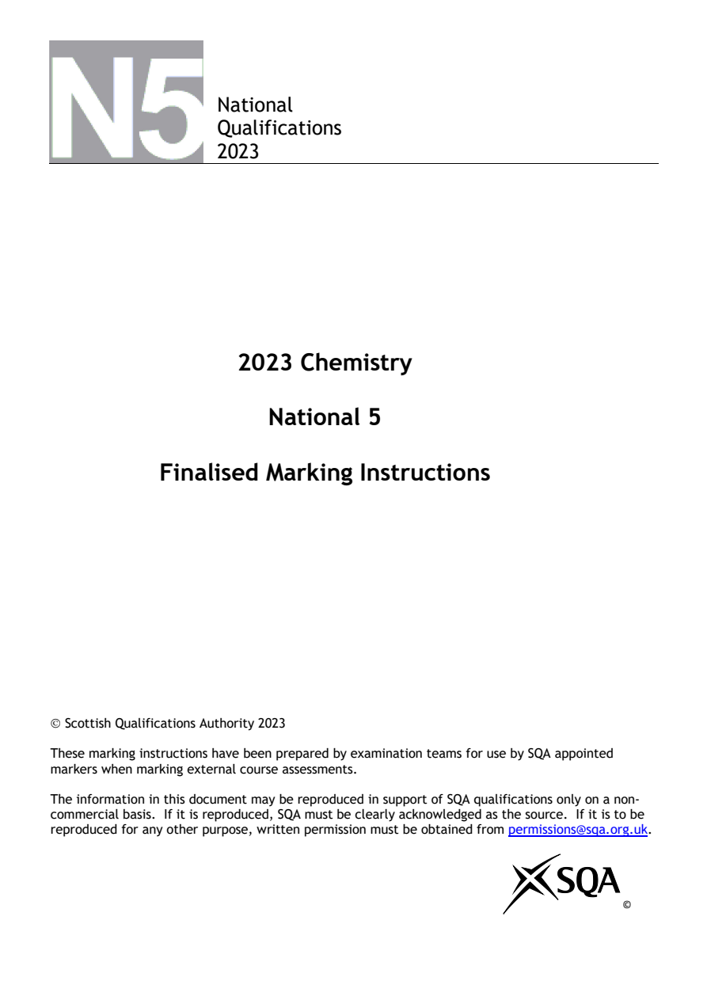
Selectable page text
National
Qualifications
2023
2023 Chemistry
National 5
Finalised Marking Instructions
Scottish Qualifications Authority 2023
These marking instructions have been prepared by examination teams for use by SQA appointed
markers when marking external course assessments.
The information in this document may be reproduced in support of SQA qualifications only on a non-
commercial basis. If it is reproduced, SQA must be clearly acknowledged as the source. If it is to be
reproduced for any other purpose, written permission must be obtained from permissions@sqa.org.uk.
©PDF page 2
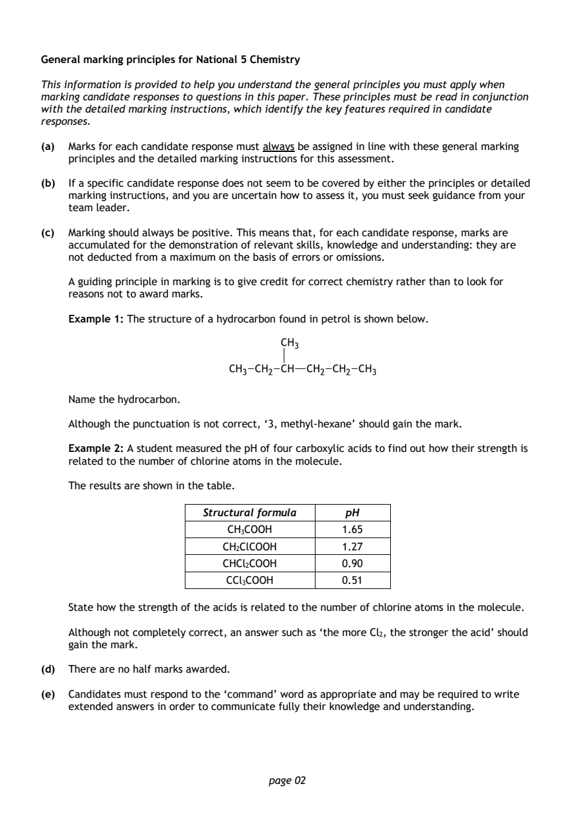
Selectable page text
General marking principles for National 5 Chemistry
This information is provided to help you understand the general principles you must apply when
marking candidate responses to questions in this paper. These principles must be read in conjunction
with the detailed marking instructions, which identify the key features required in candidate
responses.
(a) Marks for each candidate response must always be assigned in line with these general marking
principles and the detailed marking instructions for this assessment.
(b) If a specific candidate response does not seem to be covered by either the principles or detailed
marking instructions, and you are uncertain how to assess it, you must seek guidance from your
team leader.
(c) Marking should always be positive. This means that, for each candidate response, marks are
accumulated for the demonstration of relevant skills, knowledge and understanding: they are
not deducted from a maximum on the basis of errors or omissions.
A guiding principle in marking is to give credit for correct chemistry rather than to look for
reasons not to award marks.
Example 1: The structure of a hydrocarbon found in petrol is shown below.
Name the hydrocarbon.
Although the punctuation is not correct, ‘3, methyl-hexane’ should gain the mark.
Example 2: A student measured the pH of four carboxylic acids to find out how their strength is
related to the number of chlorine atoms in the molecule.
The results are shown in the table.
Structural formula pH
CH₃COOH 1.65
CH₂ClCOOH 1.27
CHCl₂COOH 0.90
CCl₃COOH 0.51
State how the strength of the acids is related to the number of chlorine atoms in the molecule.
Although not completely correct, an answer such as ‘the more Cl₂, the stronger the acid’ should
gain the mark.
(d) There are no half marks awarded.
(e) Candidates must respond to the ‘command’ word as appropriate and may be required to write
extended answers in order to communicate fully their knowledge and understanding.
page 02PDF page 3
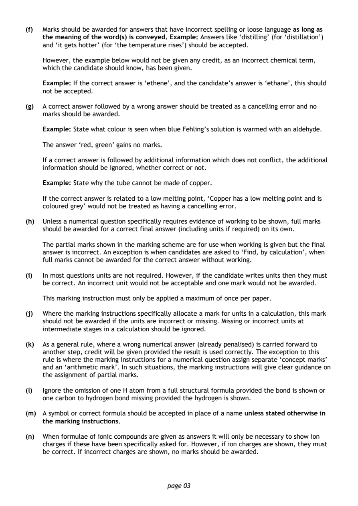
Selectable page text
(f) Marks should be awarded for answers that have incorrect spelling or loose language as long as
the meaning of the word(s) is conveyed. Example: Answers like ‘distilling’ (for ‘distillation’)
and ‘it gets hotter’ (for ‘the temperature rises’) should be accepted.
However, the example below would not be given any credit, as an incorrect chemical term,
which the candidate should know, has been given.
Example: If the correct answer is ‘ethene’, and the candidate’s answer is ‘ethane’, this should
not be accepted.
(g) A correct answer followed by a wrong answer should be treated as a cancelling error and no
marks should be awarded.
Example: State what colour is seen when blue Fehling’s solution is warmed with an aldehyde.
The answer ‘red, green’ gains no marks.
If a correct answer is followed by additional information which does not conflict, the additional
information should be ignored, whether correct or not.
Example: State why the tube cannot be made of copper.
If the correct answer is related to a low melting point, ‘Copper has a low melting point and is
coloured grey’ would not be treated as having a cancelling error.
(h) Unless a numerical question specifically requires evidence of working to be shown, full marks
should be awarded for a correct final answer (including units if required) on its own.
The partial marks shown in the marking scheme are for use when working is given but the final
answer is incorrect. An exception is when candidates are asked to ‘Find, by calculation’, when
full marks cannot be awarded for the correct answer without working.
(i) In most questions units are not required. However, if the candidate writes units then they must
be correct. An incorrect unit would not be acceptable and one mark would not be awarded.
This marking instruction must only be applied a maximum of once per paper.
(j) Where the marking instructions specifically allocate a mark for units in a calculation, this mark
should not be awarded if the units are incorrect or missing. Missing or incorrect units at
intermediate stages in a calculation should be ignored.
(k) As a general rule, where a wrong numerical answer (already penalised) is carried forward to
another step, credit will be given provided the result is used correctly. The exception to this
rule is where the marking instructions for a numerical question assign separate ‘concept marks’
and an ‘arithmetic mark’. In such situations, the marking instructions will give clear guidance on
the assignment of partial marks.
(l) Ignore the omission of one H atom from a full structural formula provided the bond is shown or
one carbon to hydrogen bond missing provided the hydrogen is shown.
(m) A symbol or correct formula should be accepted in place of a name unless stated otherwise in
the marking instructions.
(n) When formulae of ionic compounds are given as answers it will only be necessary to show ion
charges if these have been specifically asked for. However, if ion charges are shown, they must
be correct. If incorrect charges are shown, no marks should be awarded.
page 03PDF page 4
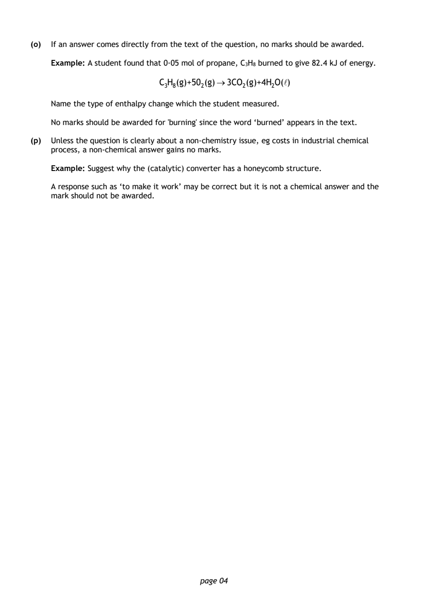
Selectable page text
(o) If an answer comes directly from the text of the question, no marks should be awarded.
Example: A student found that 0·05 mol of propane, C₃H₈ burned to give 82.4 kJ of energy.
C₃H₈(g)+50₂(g)→3CO₂(g)+4H₂O()
Name the type of enthalpy change which the student measured.
No marks should be awarded for 'burning' since the word ‘burned’ appears in the text.
(p) Unless the question is clearly about a non-chemistry issue, eg costs in industrial chemical
process, a non-chemical answer gains no marks.
Example: Suggest why the (catalytic) converter has a honeycomb structure.
A response such as ‘to make it work’ may be correct but it is not a chemical answer and the
mark should not be awarded.
page 04PDF page 5
Paper 1, Question 1Paper 1, Question 2Paper 1, Question 3Paper 1, Question 4Paper 1, Question 5Paper 1, Question 6Paper 1, Question 7Paper 1, Question 8Paper 1, Question 9Paper 1, Question 10Paper 1, Question 11Paper 1, Question 12Paper 1, Question 13Paper 1, Question 14Paper 1, Question 15Paper 1, Question 16Paper 1, Question 17Paper 1, Question 18Paper 1, Question 19Paper 1, Question 20Paper 1, Question 21Paper 1, Question 22Paper 1, Question 23Paper 1, Question 24Paper 1, Question 25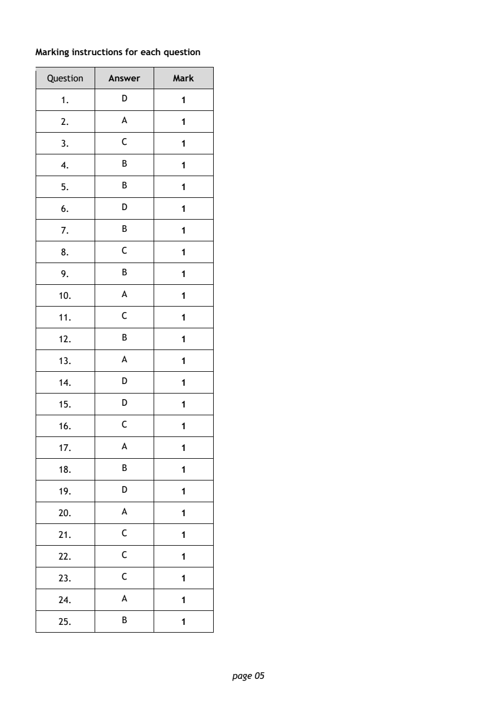
Selectable page text
Marking instructions for each question
Question Answer Mark
1. D 1
2. A 1
3. C 1
4. B 1
5. B 1
6. D 1
7. B 1
8. C 1
9. B 1
10. A 1
11. C 1
12. B 1
13. A 1
14. D 1
15. D 1
16. C 1
17. A 1
18. B 1
19. D 1
20. A 1
21. C 1
22. C 1
23. C 1
24. A 1
25. B 1
page 05PDF page 6
Paper 2, Question 1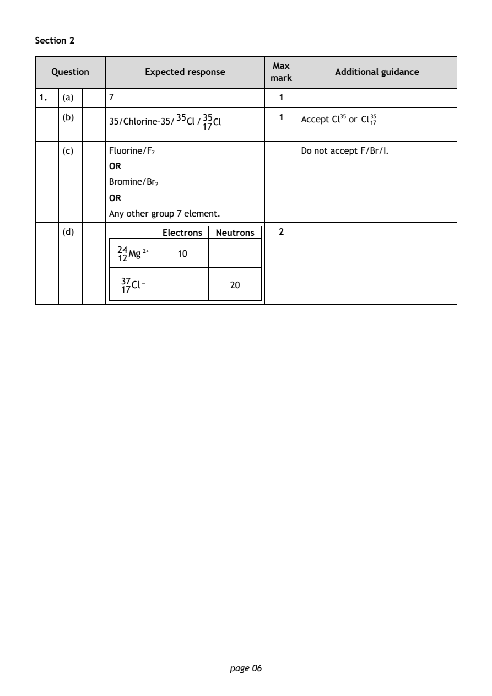
Selectable page text
Section 2
Max
Question Expected response Additional guidance
mark
1. (a) 7 1
(b) 35/Chlorine-35/ 35 Cl/ 35 Cl 1 Accept Cl³⁵ or Cl₁³₇⁵
17
(c) Fluorine/F₂ Do not accept F/Br/I.
OR
Bromine/Br₂
OR
Any other group 7 element.
(d) Electrons Neutrons 2
24
Mg²⁺ 10
12
37
Cl⁻ 20
17
page 06PDF page 7
Paper 2, Question 2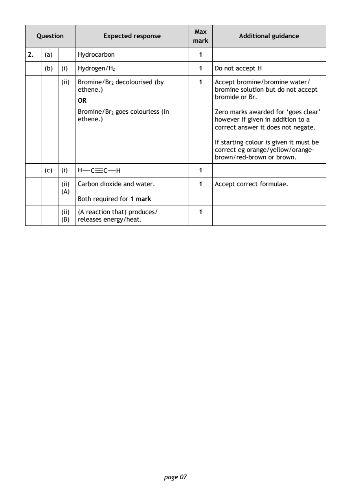
Selectable page text
Max
Question Expected response Additional guidance
mark
2. (a) Hydrocarbon 1
(b) (i) Hydrogen/H₂ 1 Do not accept H
(ii) Bromine/Br₂ decolourised (by 1 Accept bromine/bromine water/
ethene.) bromine solution but do not accept
bromide or Br.
OR
Bromine/Br₂ goes colourless (in Zero marks awarded for ‘goes clear’
ethene.) however if given in addition to a
correct answer it does not negate.
If starting colour is given it must be
correct eg orange/yellow/orange-
brown/red-brown or brown.
(c) (i) H C C H 1
(ii) Carbon dioxide and water. 1 Accept correct formulae.
(A)
Both required for 1 mark
(ii) (A reaction that) produces/ 1
(B) releases energy/heat.
page 07PDF page 8
Paper 2, Question 3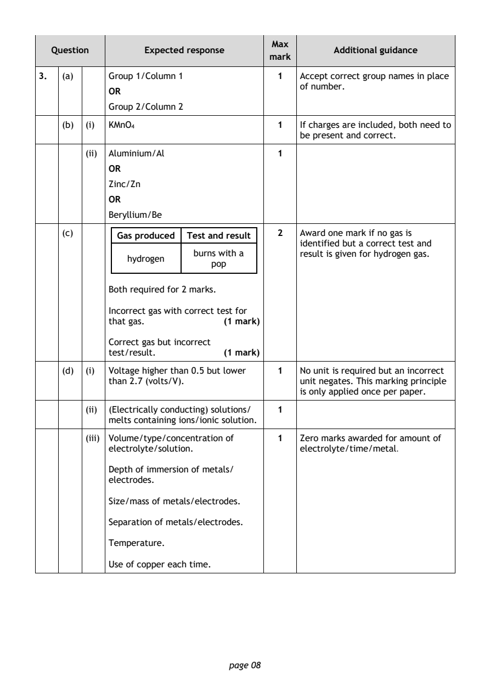
Selectable page text
Max
Question Expected response Additional guidance
mark
3. (a) Group 1/Column 1 1 Accept correct group names in place
of number.
OR
Group 2/Column 2
(b) (i) KMnO₄ 1 If charges are included, both need to
be present and correct.
(ii) Aluminium/Al 1
OR
Zinc/Zn
OR
Beryllium/Be
(c) 2 Award one mark if no gas is
Gas produced Test and result
identified but a correct test and
burns with a result is given for hydrogen gas.
hydrogen
pop
Both required for 2 marks.
Incorrect gas with correct test for
that gas. (1 mark)
Correct gas but incorrect
test/result. (1 mark)
(d) (i) Voltage higher than 0.5 but lower 1 No unit is required but an incorrect
than 2.7 (volts/V). unit negates. This marking principle
is only applied once per paper.
(ii) (Electrically conducting) solutions/ 1
melts containing ions/ionic solution.
(iii) Volume/type/concentration of 1 Zero marks awarded for amount of
electrolyte/solution. electrolyte/time/metal.
Depth of immersion of metals/
electrodes.
Size/mass of metals/electrodes.
Separation of metals/electrodes.
Temperature.
Use of copper each time.
page 08PDF page 9
Paper 2, Question 4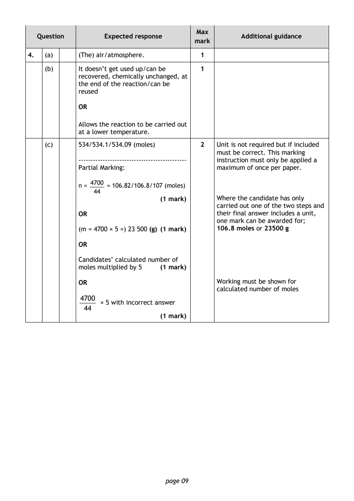
Selectable page text
Max
Question Expected response Additional guidance
mark
4. (a) (The) air/atmosphere. 1
(b) It doesn’t get used up/can be 1
recovered, chemically unchanged, at
the end of the reaction/can be
reused
OR
Allows the reaction to be carried out
at a lower temperature.
(c) 534/534.1/534.09 (moles) 2 Unit is not required but if included
must be correct. This marking
--------------------------------------------- instruction must only be applied a
Partial Marking: maximum of once per paper.
4700
n = = 106.82/106.8/107 (moles)
44
(1 mark) Where the candidate has only
carried out one of the two steps and
OR their final answer includes a unit,
one mark can be awarded for;
(m = 4700 × 5 =) 23 500 (g) (1 mark) 106.8 moles or 23500 g
OR
Candidates’ calculated number of
moles multiplied by 5 (1 mark)
OR Working must be shown for
calculated number of moles
4700
× 5 with incorrect answer
44
(1 mark)
page 09PDF page 10
Paper 2, Question 5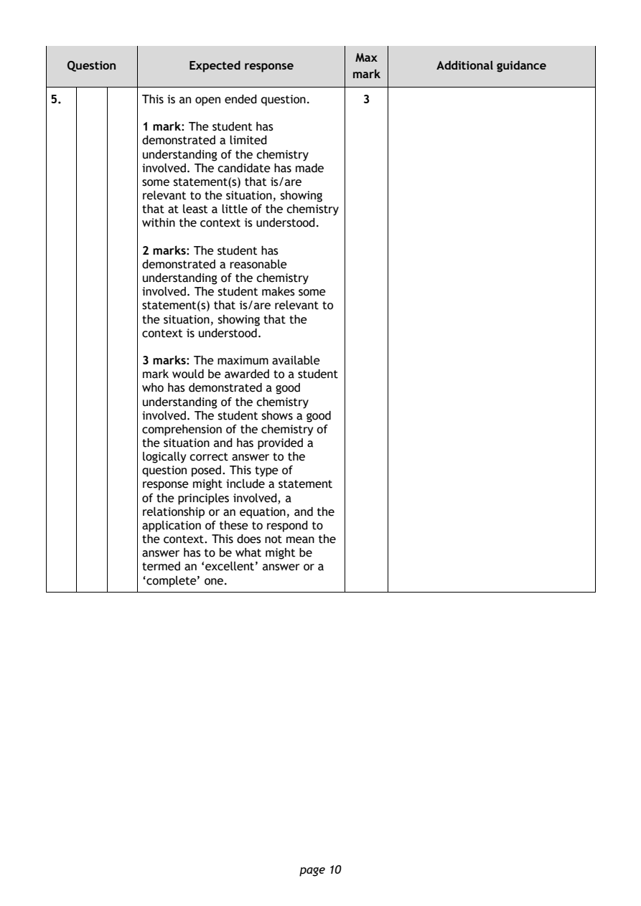
Selectable page text
Max
Question Expected response Additional guidance
mark
5. This is an open ended question. 3
1 mark: The student has
demonstrated a limited
understanding of the chemistry
involved. The candidate has made
some statement(s) that is/are
relevant to the situation, showing
that at least a little of the chemistry
within the context is understood.
2 marks: The student has
demonstrated a reasonable
understanding of the chemistry
involved. The student makes some
statement(s) that is/are relevant to
the situation, showing that the
context is understood.
3 marks: The maximum available
mark would be awarded to a student
who has demonstrated a good
understanding of the chemistry
involved. The student shows a good
comprehension of the chemistry of
the situation and has provided a
logically correct answer to the
question posed. This type of
response might include a statement
of the principles involved, a
relationship or an equation, and the
application of these to respond to
the context. This does not mean the
answer has to be what might be
termed an ‘excellent’ answer or a
‘complete’ one.
page 10PDF page 11
Paper 2, Question 6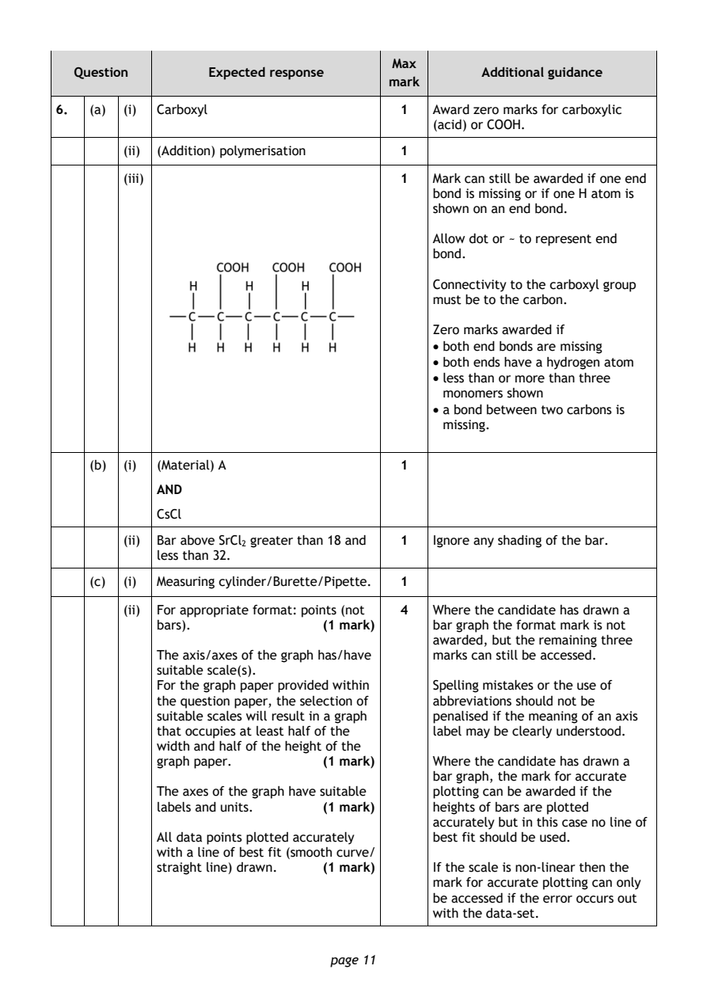
Selectable page text
Max
Question Expected response Additional guidance
mark
6. (a) (i) Carboxyl 1 Award zero marks for carboxylic
(acid) or COOH.
(ii) (Addition) polymerisation 1
(iii) 1 Mark can still be awarded if one end
bond is missing or if one H atom is
shown on an end bond.
Allow dot or ~ to represent end
bond.
Connectivity to the carboxyl group
must be to the carbon.
Zero marks awarded if
• both end bonds are missing
• both ends have a hydrogen atom
• less than or more than three
monomers shown
• a bond between two carbons is
missing.
(b) (i) (Material) A 1
AND
CsCl
(ii) Bar above SrCl₂ greater than 18 and 1 Ignore any shading of the bar.
less than 32.
(c) (i) Measuring cylinder/Burette/Pipette. 1
(ii) For appropriate format: points (not 4 Where the candidate has drawn a
bars). (1 mark) bar graph the format mark is not
awarded, but the remaining three
The axis/axes of the graph has/have marks can still be accessed.
suitable scale(s).
For the graph paper provided within Spelling mistakes or the use of
the question paper, the selection of abbreviations should not be
suitable scales will result in a graph penalised if the meaning of an axis
that occupies at least half of the label may be clearly understood.
width and half of the height of the
graph paper. (1 mark) Where the candidate has drawn a
bar graph, the mark for accurate
The axes of the graph have suitable plotting can be awarded if the
labels and units. (1 mark) heights of bars are plotted
accurately but in this case no line of
All data points plotted accurately best fit should be used.
with a line of best fit (smooth curve/
straight line) drawn. (1 mark) If the scale is non-linear then the
mark for accurate plotting can only
be accessed if the error occurs out
with the data-set.
page 11PDF page 12
Paper 2, Question 7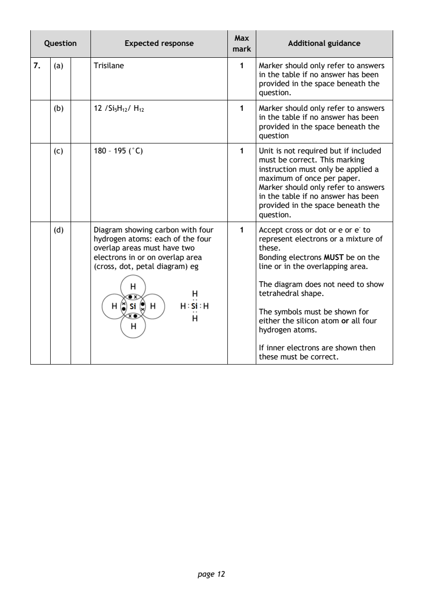
Selectable page text
Max
Question Expected response Additional guidance
mark
7. (a) Trisilane 1 Marker should only refer to answers
in the table if no answer has been
provided in the space beneath the
question.
(b) 12 /Si₅H₁ / H₁ 1 Marker should only refer to answers
2 2
in the table if no answer has been
provided in the space beneath the
question
(c) 180 – 195 (°C) 1 Unit is not required but if included
must be correct. This marking
instruction must only be applied a
maximum of once per paper.
Marker should only refer to answers
in the table if no answer has been
provided in the space beneath the
question.
(d) Diagram showing carbon with four 1 Accept cross or dot or e or e⁻ to
hydrogen atoms: each of the four represent electrons or a mixture of
overlap areas must have two these.
electrons in or on overlap area Bonding electrons MUST be on the
(cross, dot, petal diagram) eg line or in the overlapping area.
The diagram does not need to show
tetrahedral shape.
The symbols must be shown for
either the silicon atom or all four
hydrogen atoms.
If inner electrons are shown then
these must be correct.
page 12PDF page 13
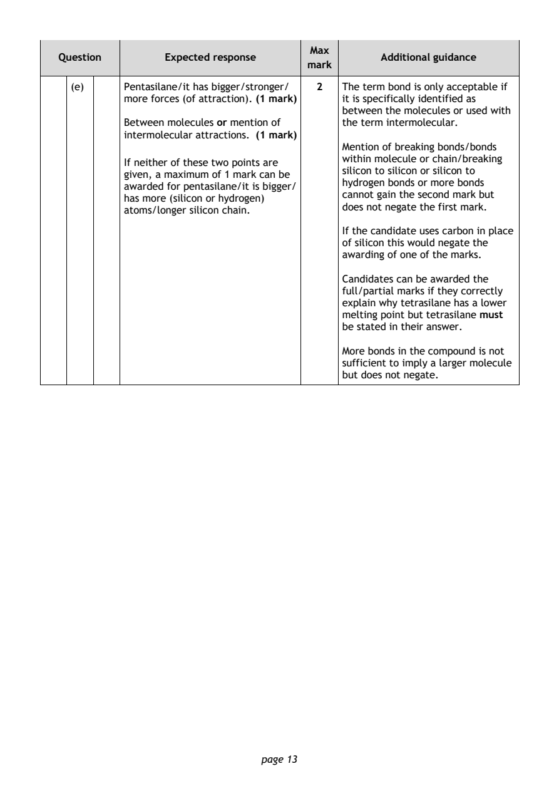
Selectable page text
Max
Question Expected response Additional guidance
mark
(e) Pentasilane/it has bigger/stronger/ 2 The term bond is only acceptable if
more forces (of attraction). (1 mark) it is specifically identified as
between the molecules or used with
Between molecules or mention of the term intermolecular.
intermolecular attractions. (1 mark)
Mention of breaking bonds/bonds
within molecule or chain/breaking
If neither of these two points are
silicon to silicon or silicon to
given, a maximum of 1 mark can be
hydrogen bonds or more bonds
awarded for pentasilane/it is bigger/
cannot gain the second mark but
has more (silicon or hydrogen)
does not negate the first mark.
atoms/longer silicon chain.
If the candidate uses carbon in place
of silicon this would negate the
awarding of one of the marks.
Candidates can be awarded the
full/partial marks if they correctly
explain why tetrasilane has a lower
melting point but tetrasilane must
be stated in their answer.
More bonds in the compound is not
sufficient to imply a larger molecule
but does not negate.
page 13PDF page 14
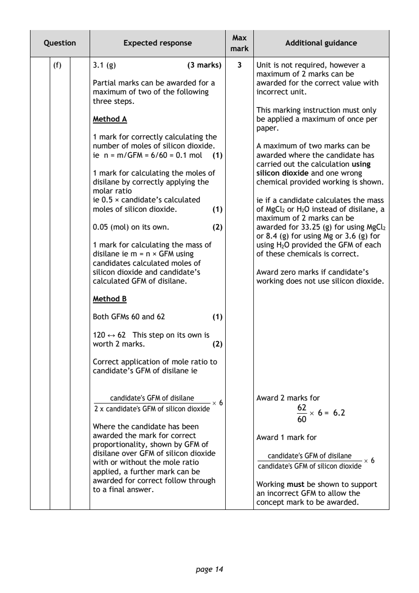
Selectable page text
Max
Question Expected response Additional guidance
mark
(f) 3.1 (g) (3 marks) 3 Unit is not required, however a
maximum of 2 marks can be
Partial marks can be awarded for a awarded for the correct value with
maximum of two of the following incorrect unit.
three steps.
This marking instruction must only
Method A be applied a maximum of once per
paper.
1 mark for correctly calculating the
number of moles of silicon dioxide. A maximum of two marks can be
ie n = m/GFM = 6/60 = 0.1 mol (1) awarded where the candidate has
carried out the calculation using
1 mark for calculating the moles of silicon dioxide and one wrong
disilane by correctly applying the chemical provided working is shown.
molar ratio
ie 0.5 × candidate’s calculated ie if a candidate calculates the mass
moles of silicon dioxide. (1) of MgCl₂ or H₂O instead of disilane, a
maximum of 2 marks can be
0.05 (mol) on its own. (2) awarded for 33.25 (g) for using MgCl₂
or 8.4 (g) for using Mg or 3.6 (g) for
1 mark for calculating the mass of using H₂O provided the GFM of each
disilane ie m = n × GFM using of these chemicals is correct.
candidates calculated moles of
silicon dioxide and candidate’s Award zero marks if candidate’s
calculated GFM of disilane. working does not use silicon dioxide.
Method B
Both GFMs 60 and 62 (1)
120 ↔ 62 This step on its own is
worth 2 marks. (2)
Correct application of mole ratio to
candidate’s GFM of disilane ie
candidate′s GFM of disilane Award 2 marks for
× 6
2 x candidate's GFM of silicon dioxide 62
× 6 = 6.2
60
Where the candidate has been
awarded the mark for correct
Award 1 mark for
proportionality, shown by GFM of
disilane over GFM of silicon dioxide candidate′s GFM of disilane
with or without the mole ratio × 6
candidate's GFM of silicon dioxide
applied, a further mark can be
awarded for correct follow through
Working must be shown to support
to a final answer.
an incorrect GFM to allow the
concept mark to be awarded.
page 14PDF page 15
Paper 2, Question 8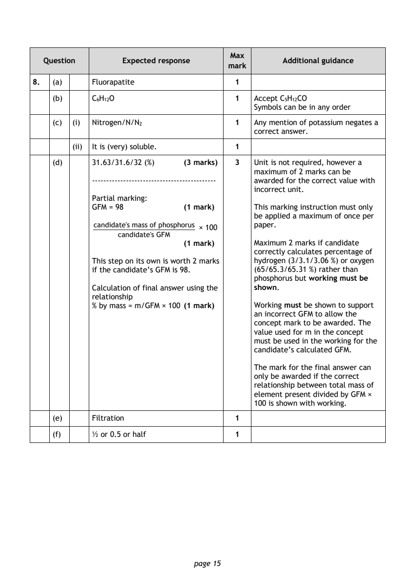
Selectable page text
Max
Question Expected response Additional guidance
mark
8. (a) Fluorapatite 1
(b) C₆H₁ O 1 Accept C₅H₁ CO
2
Symbols can² be in any order
(c) (i) Nitrogen/N/N₂ 1 Any mention of potassium negates a
correct answer.
(ii) It is (very) soluble. 1
(d) 31.63/31.6/32 (%) (3 marks) 3 Unit is not required, however a
maximum of 2 marks can be
-------------------------------------------- awarded for the correct value with
incorrect unit.
Partial marking:
GFM = 98 (1 mark) This marking instruction must only
be applied a maximum of once per
candidate's mass of phosphorus paper.
× 100
candidate's GFM
(1 mark) Maximum 2 marks if candidate
correctly calculates percentage of
This step on its own is worth 2 marks hydrogen (3/3.1/3.06 %) or oxygen
if the candidate’s GFM is 98. (65/65.3/65.31 %) rather than
phosphorus but working must be
Calculation of final answer using the shown.
relationship
% by mass = m/GFM × 100 (1 mark) Working must be shown to support
an incorrect GFM to allow the
concept mark to be awarded. The
value used for m in the concept
must be used in the working for the
candidate’s calculated GFM.
The mark for the final answer can
only be awarded if the correct
relationship between total mass of
element present divided by GFM ×
100 is shown with working.
(e) Filtration 1
(f) ½ or 0.5 or half 1
page 15PDF page 16
Paper 2, Question 9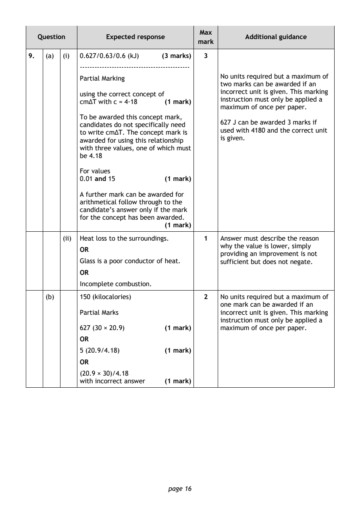
Selectable page text
Max
Question Expected response Additional guidance
mark
9. (a) (i) 0.627/0.63/0.6 (kJ) (3 marks) 3
---------------------------------------------
No units required but a maximum of
Partial Marking
two marks can be awarded if an
incorrect unit is given. This marking
using the correct concept of
instruction must only be applied a
cmΔT with c = 4·18 (1 mark)
maximum of once per paper.
To be awarded this concept mark,
627 J can be awarded 3 marks if
candidates do not specifically need
used with 4180 and the correct unit
to write cmΔT. The concept mark is
is given.
awarded for using this relationship
with three values, one of which must
be 4.18
For values
0.01 and 15 (1 mark)
A further mark can be awarded for
arithmetical follow through to the
candidate’s answer only if the mark
for the concept has been awarded.
(1 mark)
(ii) Heat loss to the surroundings. 1 Answer must describe the reason
why the value is lower, simply
OR
providing an improvement is not
Glass is a poor conductor of heat. sufficient but does not negate.
OR
Incomplete combustion.
(b) 150 (kilocalories) 2 No units required but a maximum of
one mark can be awarded if an
Partial Marks incorrect unit is given. This marking
instruction must only be applied a
627 (30 × 20.9) (1 mark) maximum of once per paper.
OR
5 (20.9/4.18) (1 mark)
OR
(20.9 × 30)/4.18
with incorrect answer (1 mark)
page 16PDF page 17
Paper 2, Question 10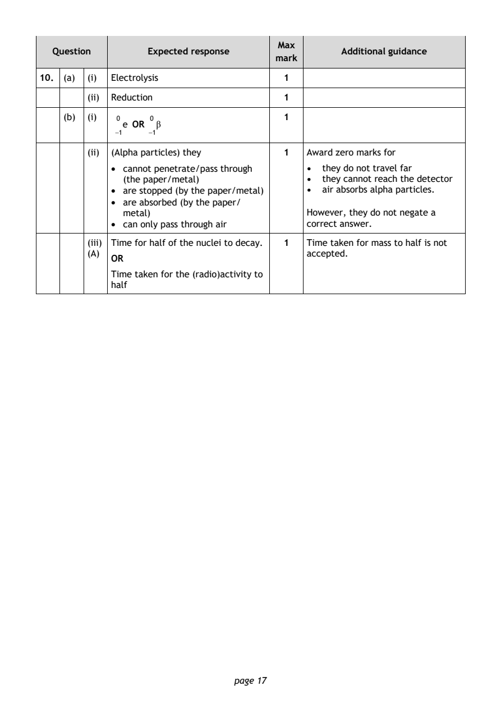
Selectable page text
Max
Question Expected response Additional guidance
mark
10. (a) (i) Electrolysis 1
(ii) Reduction 1
(b) (i) 0 1
e OR ₋⁰₁β
−1
(ii) (Alpha particles) they 1 Award zero marks for
• cannot penetrate/pass through • they do not travel far
(the paper/metal) • they cannot reach the detector
• are stopped (by the paper/metal) • air absorbs alpha particles.
• are absorbed (by the paper/
metal) However, they do not negate a
• can only pass through air correct answer.
(iii) Time for half of the nuclei to decay. 1 Time taken for mass to half is not
(A) accepted.
OR
Time taken for the (radio)activity to
half
page 17PDF page 18
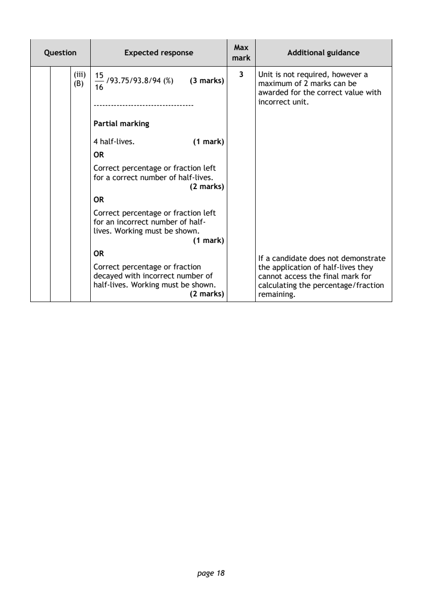
Selectable page text
Max
Question Expected response Additional guidance
mark
(iii) 15 3 Unit is not required, however a
/93.75/93.8/94 (%) (3 marks)
(B) maximum of 2 marks can be
16
awarded for the correct value with
incorrect unit.
-----------------------------------
Partial marking
4 half-lives. (1 mark)
OR
Correct percentage or fraction left
for a correct number of half-lives.
(2 marks)
OR
Correct percentage or fraction left
for an incorrect number of half-
lives. Working must be shown.
(1 mark)
OR
If a candidate does not demonstrate
Correct percentage or fraction the application of half-lives they
decayed with incorrect number of cannot access the final mark for
half-lives. Working must be shown. calculating the percentage/fraction
(2 marks) remaining.
page 18PDF page 19
Paper 2, Question 11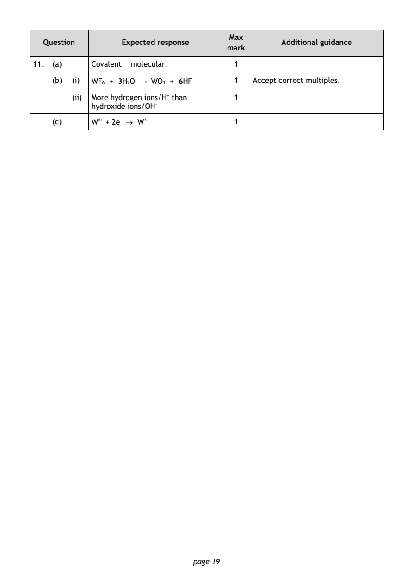
Selectable page text
Max
Question Expected response Additional guidance
mark
11. (a) Covalent molecular. 1
(b) (i) WF₆ + 3H₂O → WO₃ + 6HF 1 Accept correct multiples.
(ii) More hydrogen ions/H⁺ than 1
hydroxide ions/OH⁻
(c) W⁶⁺ + 2e⁻ → W⁴⁺ 1
page 19PDF page 20
Paper 2, Question 12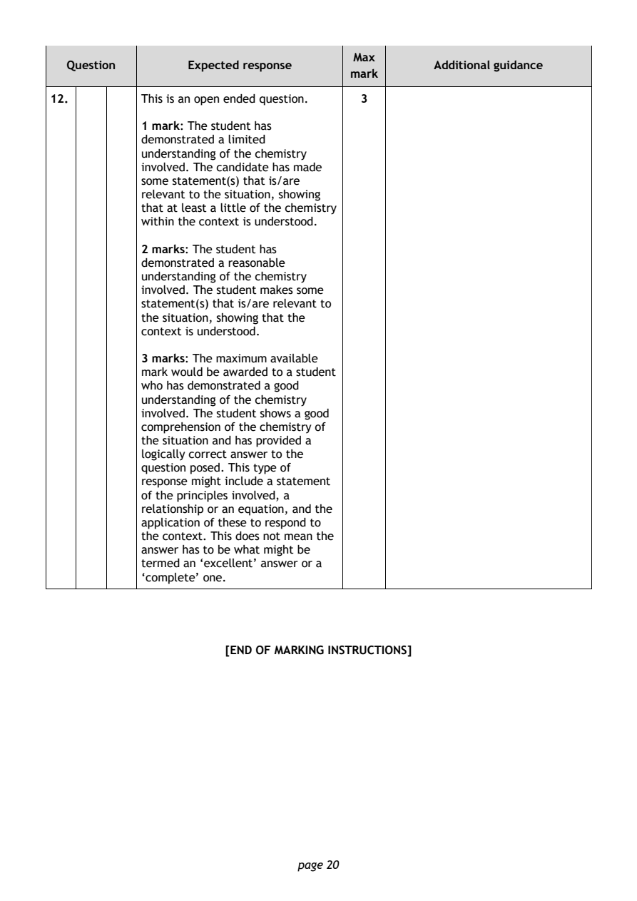
Selectable page text
Max
Question Expected response Additional guidance
mark
12. This is an open ended question. 3
1 mark: The student has
demonstrated a limited
understanding of the chemistry
involved. The candidate has made
some statement(s) that is/are
relevant to the situation, showing
that at least a little of the chemistry
within the context is understood.
2 marks: The student has
demonstrated a reasonable
understanding of the chemistry
involved. The student makes some
statement(s) that is/are relevant to
the situation, showing that the
context is understood.
3 marks: The maximum available
mark would be awarded to a student
who has demonstrated a good
understanding of the chemistry
involved. The student shows a good
comprehension of the chemistry of
the situation and has provided a
logically correct answer to the
question posed. This type of
response might include a statement
of the principles involved, a
relationship or an equation, and the
application of these to respond to
the context. This does not mean the
answer has to be what might be
termed an ‘excellent’ answer or a
‘complete’ one.
[END OF MARKING INSTRUCTIONS]
page 20